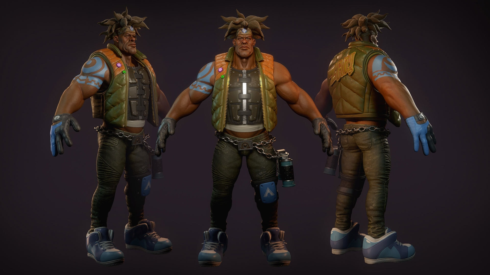
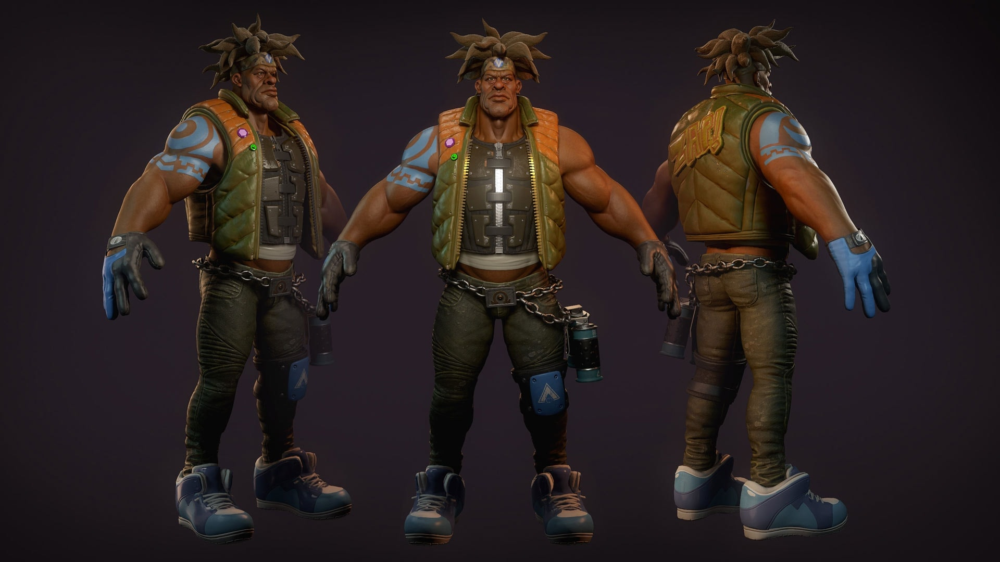

La mayoría de los trabajos de modelado 3D combinan ideas creativas y las últimas tecnologías y juegan un papel importante en el desarrollo de diversos entretenimientos y maravillas de ingeniería. Incluso si el modelado 3D es un campo competitivo, es una gran carrera profesional para cada individuo que planea elegir este campo de modelado 3D.
 

A continuación podrás ver un video en el que te explican un poco mejor sobre esta carrera y sus posibilidades en el mundo laboral: